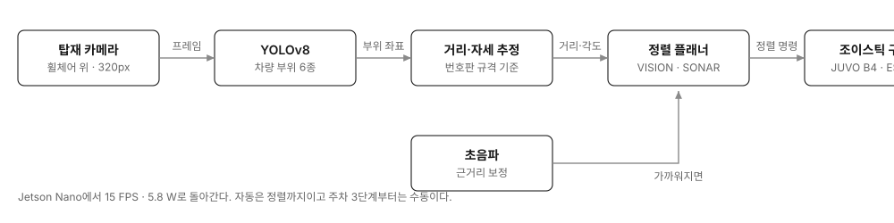

전동휠체어 자동 주차 시스템
사람 도움 없이 휠체어를 차에 싣는다
Impact
- 181장공개 데이터셋으로 안 돼 실차 121장·목업 60장을 직접 찍고 라벨링
- 15FPSJetson Nano 320px 실시간 추론 · 5.8 W
- 6종차량 부위 탐지 · mAP50 0.754~0.995
Background
전동휠체어 사용자가 차에 탄 뒤에는 남겨진 휠체어를 혼자 실을 수 없어서 누군가의 도움을 받아야 합니다. 혼자 운전하는 사용자에게는 외출 자체가 어려워집니다.
휠체어에 장치를 덧붙이지 않는 쪽이 여러 기종에 적용하기 좋아서, 차량에 이미 달려 있는 어라운드뷰 카메라로 시작했습니다.
Architecture

휠체어에 실은 카메라가 차량 부위를 탐지하면 번호판 크기를 기준으로 거리와 각도를 계산하고, 그 값으로 정렬기가 바퀴를 움직입니다. 가까워지면 카메라로는 잘 보이지 않아 초음파가 기준을 넘겨받습니다.
Contributions
V1 — 차량 카메라로 휠체어 위치를 추정했다
어안 렌즈 보정, 마커 검출, SolvePnP로 자세를 구한 뒤 회귀 보정층과 칼만 필터를 얹었습니다. 오차가 거리와 각도에 따라 일정한 방향으로 치우치는 것을 확인하고, 그 편향을 학습으로 상쇄하는 보정층을 설계했습니다. 8단계 중 7단계가 실기체에서 동작했습니다.
V1을 접고 카메라를 옮겼다
어라운드뷰는 차량 바로 주변을 보라고 달린 장치인데 휠체어는 그 바깥에서 출발합니다. 멀어질수록 마커가 작아지고 렌즈 가장자리로 밀려서, 보정으로는 채울 수 없는 구간이 남았습니다. 캘리브레이션은 왜곡을 펴는 작업이지 찍히지 않은 곳을 보이게 하지는 못합니다. 그래서 카메라를 휠체어에 실어 대상까지의 거리가 항상 가깝게 만들었습니다.

V2 — 차량 부위 6종을 따로 탐지하고 번호판을 기준자로 썼다
공개 데이터셋은 차량을 상자 하나로만 잡아서 정렬에 쓸 기준이 없었습니다. 실차 121장과 목업 60장을 직접 촬영하고 라벨링해 YOLOv8을 다시 학습시켜 사이드미러와 번호판, 후미등 등 6종을 개별 탐지했습니다. 카메라가 한 대라 절대 거리를 알 수 없어서, 규격이 정해진 번호판을 기준자로 삼고 핀홀 모델로 거리와 각도를 계산했습니다.
Troubleshooting
튜닝으로 풀 문제와 설계를 바꿔야 하는 문제
- 문제
- V1에서 보정층과 칼만 필터를 계속 붙였는데도 먼 구간의 오차가 줄지 않았습니다.
- 원인
- 파라미터 문제가 아니라 그 구간이 아예 찍히지 않는 것이었습니다. 이미 7단계까지 동작하던 상태라 버리기 아까웠고, 팀에서도 아무도 먼저 말을 꺼내지 않았습니다.
- 해결
- 마커를 더 키울 수도 보정으로 메울 수도 없다는 근거를 정리해서 카메라를 휠체어로 옮기자고 제안했습니다. 바뀌는 부분이 제 담당이었기 때문에 시뮬레이션을 실물로 옮기는 작업까지 맡았습니다.
- 결과
- 경로 생성은 그대로 쓸 수 있어서 팀원의 작업은 영향을 받지 않았습니다.
Jetson Nano에서 프리징
- 문제
- 추론을 돌리면 보드가 멈춰서 아무 응답이 없었습니다.
- 원인
- 메모리가 모자라 스왑이 부족해진 것이었습니다.
- 해결
- 스왑을 4GB로 늘리고 입력 해상도를 320픽셀로 낮췄습니다.
- 결과
- 15FPS로 지속 구동했고 추론에 42ms가 걸렸습니다.
어디까지 됐는지
주차 9단계를 실기체에서 확인했지만 자동으로 도는 것은 정렬 1·2단계까지이고 3단계부터는 수동으로 조작합니다. 출차 경로는 설계까지 했습니다. 휠체어에 붙는 장치가 계속 늘고 카메라와 초음파가 동시에 놓치면 복구할 방법이 없어서 UWB 측위를 검토하고 있습니다.